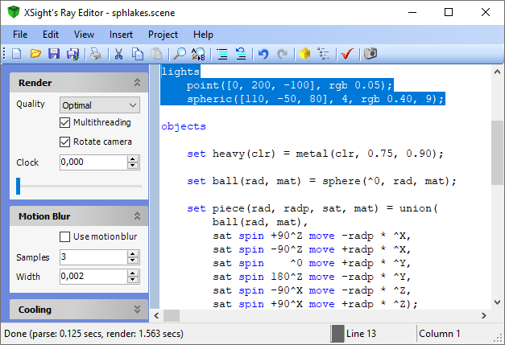

XSight's Ray Editor uses a code editor based in the Anvil component, developed at Intuitive Sight's for the Freya Programming Language.

Navigation
| Shortcut | Action |
|---|
| Up | Moves one line up. |
| Down | Moves one line down. |
| Ctrl+Up | Scrolls one line up. |
| Ctrl+Down | Scrolls one line down. |
| Right | Moves one character right. |
| Left | Moves one character left. |
| Ctrl+Left | Moves one word left. |
| Ctrl+Right | Moves one word right. |
| PageUp | Moves one page up. |
| PageDn | Moves one page down. |
| Home | Moves to the beginning of the current line. |
| End | Moves to the end of the current line. |
| Ctrl+F | Shows the Find dialog. |
| Ctrl+R | Shows the Replace dialog. |
| Ctrl+G | Shows the Go To Line dialog. |
| Ctrl+B | Toggles a bookmark at the current line. |
| Alt+Down | Moves to the next bookmark, if any. |
| Alt+Up | Moves to the previous bookmark, if any. |
Modification
| Shortcut | Action |
|---|
| Del | Deletes one character at the right of the cursor. |
| Backspace | Deletes one character at the left of the cursor. |
| Ctrl+Del | Deletes the word to the right of the cursor. |
| Ctrl+Backspace | Deletes the word to the left of the cursor. |
| Ctrl+U | Changes the selected text to lowercase characters. |
| Shift+Ctrl+U | Changes the selected text to uppercase characters. |
| Tab | Moves selected lines to the left one tab stop.. |
| Shift+Tab | Moves selected lines to the left one tab stop. |
| Ctrl+Z | Reverses last modification. |
| Ctrl+Y | Restores last reversed modification. |
| Ctrl+J | Expand code fragment. |
Selection and the Clipboard
| Shortcut | Action |
|---|
| Ctrl+A | Select all. |
| Shift+Ctrl+W | Select word. |
| Ctrl+X | Move selected text to the Clipboard. |
| Ctrl+C | Copy selected text into the Clipboard. |
| Ctrl+V | Insert Clipboard contents into the code editor. |
See also
Home |
Using XSight's Ray Editor |
The Editor Window |
Scripting tools |
Image Window |
Scene Wizard |
Noise Generator